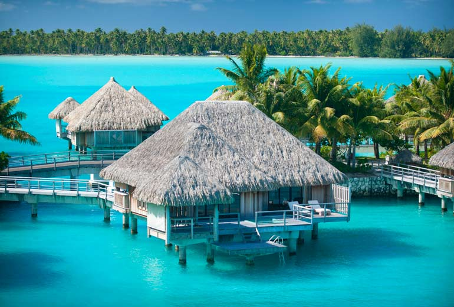
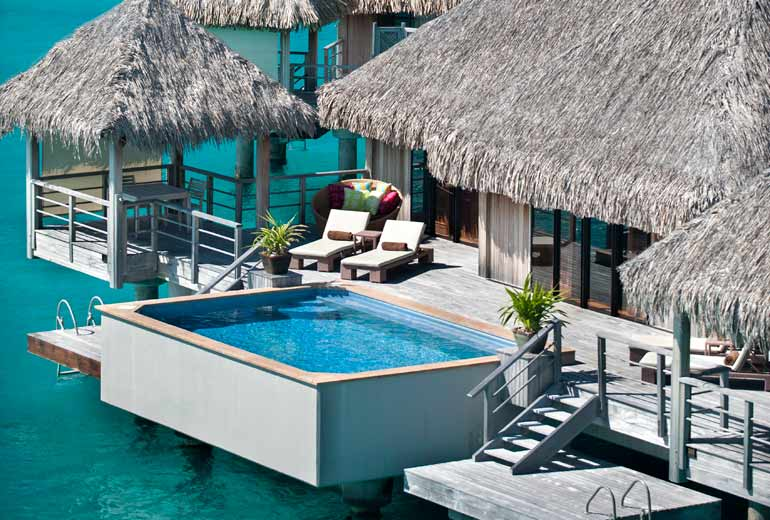

Luxurious Option 1:
3,485 square feet of paradise!
Our captivating One-Bedroom Villas offer direct access to the sandy beaches and breathtaking nature of Bora Bora. Select between One-Bedroom Pool-Beach Villas and slightly larger One-Bedroom Oceanfront Pool Villas. Each seduces with a private garden or terrace featuring a plunge pool, outdoor shower, and dining gazebo. Additionally, Pool-Beach Villas are home to a separate pontoon area.
Luxurious Option 2:
2,182 square feet of paradise!
Seamlessly fusing Bora Bora’s natural beauty with legendary St. Regis elegance, our Overwater One-Bedroom Villas promise a bespoke island experience. Select between Classic Overwater One-Bedroom Villas with lagoon views; Superior Villas, which are further along the pontoon from the main beach, offering additional seclusion; Deluxe Villas, which overlook Bora Bora’s translucent lagoon; and Premier Villas, which house an outdoor whirlpool, private pontoon, and covered daybed, as well as a larger living room with daybed nook. Meanwhile, all categories boast a terrace with outdoor shower, gazebo dining area, and deck chairs.